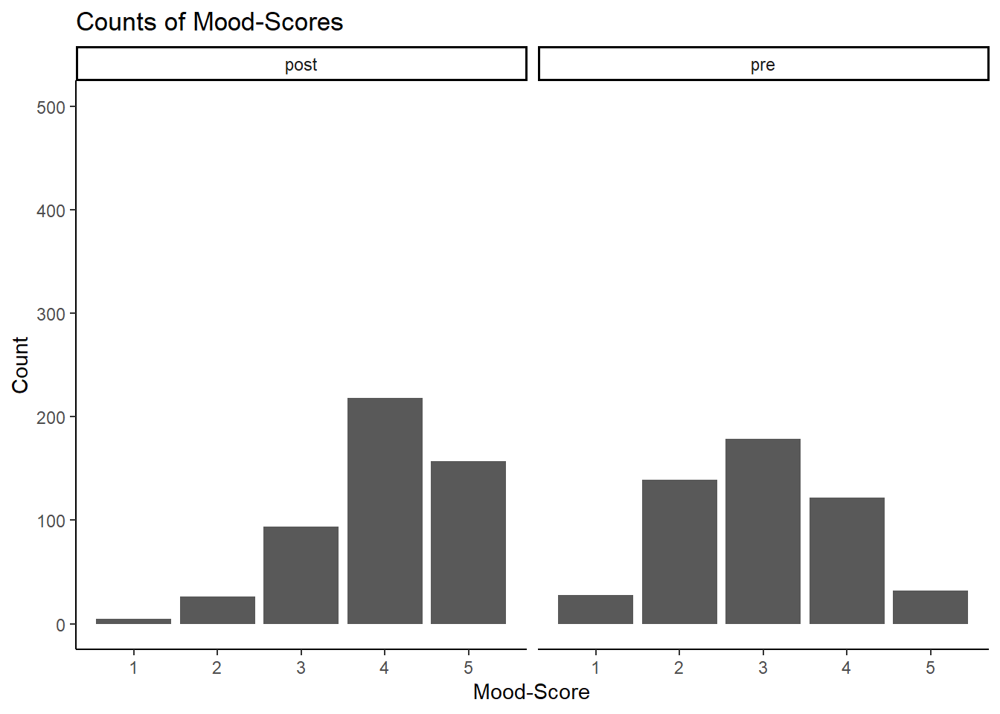

#setwd("Vorkurs")
dat = read.csv("laune.csv")KlinMeth-Vorkurs - Sitzung 4
KlinMeth-Vorkurs - Deskriptive Statistik
Heute wollen wir uns neben deskriptiver Statistik um häufig nötige Schritte der Datenaufbereitung kümmern. Dazu gehören bspw. das Rekodieren von Fragebogenitems oder auch die Umformatierung von Daten zwischen long- und wide-Format.
Dafür laden wir die Daten für heute.
Datenformatierung
Diese Daten liegen im sogenannten wide-Format vor. Das bedeutet, dass es mehrere Spalten für das Outcome gibt je nach Ausprägung einer anderen Variable (hier der Zeitpunkt). Meist lassen sich Analysen aber einfacher mit dem Long-Format schreiben, wo es eine Spalte für die andere Variable und eine für das Outcome gibt. Daten im long-Format haben für jede Versuchsperson zwei Zeilen (für Präwert und Postwert), während Daten im wide-Format nur eine Zeile pro Person haben, daher die Namensgebung.
In R gibt es für diese Umformatierung die einfache
Funktion
pivot_longer() aus dem
tidyr-Paket. Wir laden (und
installieren) deshalb nun dieses Paket. Später
werden wir auch eine Funktion aus dem
psych-Paket benutzen und mit
ggplot eine Grafik erstellen, weshalb
wir auch diese Pakete nun laden.
#install.packages("tidyr")
library(tidyr)
library(psych)
library(ggplot2)
Attache Paket: 'ggplot2'Die folgenden Objekte sind maskiert von 'package:psych':
%+%, alphaNun erstellen wir eine Version unserer Daten im long-Format.
dat_l = pivot_longer(dat, cols=c("pre", "post"), names_to="time", values_to="mood")Rekodieren
Unsere Daten stammen von einem Fragebogen, der vor und nach einem Vorkurs für ein Methodenmodul für klinische Psychologie durchgeführt wurde. Dieser Fragebogen enthielt genau ein Item: “Mir geht es gerade schlecht.” Dabei gab es als Antwortmöglichkeit eine Likertskala von “1 = stimme nicht zu” bis “5 = stimme zu”. Dieses Item ist leider negativ formuliert, sodass wir es rekodieren müssen.
Dabei soll die Antwort 1 zu Antwort 5 werden und die
Antwort 4 zu Antwort 2 usw. Dies lässt sich ganz
einfach in der Rechnung
neu = 6 - alt ausdrücken. Generell gilt
für das Rekodieren von Likertskalen mit n
Antwortmöglichkeiten (beginnend bei 1!):
neu = (n + 1) - alt. Dies können wir in
R ganz ähnlich schreiben:
dat_l$mood_r = 6 - dat_l$moodDadurch, dass wir hier schon das long-Format benutzen, müssen wir nicht zwei Zeilen jeweils für Prä- und Postspalte schreiben, was ein weiterer Vorteil der Umformatierung ist.
Visualisieren
Mit den nun aufbereiteten Daten können wir unsere Ergebnisse erstmal veranschaulichen, was bei jeder Analyse nützlich ist.
Hier gäbe es viele Möglichkeiten für Plots. Ich habe mich hier für zwei nebeneinanderstehende Histogramme für Prä- und Postverteilung entschieden.
ggplot(dat_l, aes(mood_r)) +
geom_bar() +
facet_wrap(~time) +
labs(x = "Mood-Score", y = "Count", title="Counts of Mood-Scores") +
ylim(0, 500) +
theme_classic()
An dieser Grafik lassen sich schon mehrere Beobachtungen machen. Erstens scheint sich die Laune der Personen tatsächlich zu erhöhen. Dies müsste natürlich noch inferenzstatistisch bestätigt werden. Es zeigt sich aber auch, dass es hier einen Deckeneffekt in der Post-Messung geben könnte.
Deskriptive Statistik
Zum Schluss der heutigen Sitzung schauen wir uns
noch an, wie wir deskriptive Statistiken für unsere
Daten ermitteln können. Dazu gibt es den nützlichen
describeBy()-Befehl aus dem
psych-Paket.
describeBy(dat_l)Warning in describeBy(dat_l): no grouping variable requested vars n mean sd median trimmed mad min max range skew
subjectNr 1 1000 250.50 144.41 250.5 250.50 185.32 1 500 499 0.00
time* 2 1000 1.50 0.50 1.5 1.50 0.74 1 2 1 0.00
mood 3 1000 2.51 1.08 2.0 2.48 1.48 1 5 4 0.31
mood_r 4 1000 3.49 1.08 4.0 3.52 1.48 1 5 4 -0.31
kurtosis se
subjectNr -1.20 4.57
time* -2.00 0.02
mood -0.69 0.03
mood_r -0.69 0.03Ohne weitere Informationen gibt uns R deskriptive Statistiken für alle Variablen in unseren Daten zurück, was zwar praktisch, aber hier nicht unbedingt sinnvoll ist. Eigentlich wollen wir nämlich nur deskriptive Statistiken für unser Outcome, getrennt nach Zeitpunkt, haben. Dazu müssen wir im ersten Argument die Variable spezifizieren und als zweites Argument die Gruppierungsvariable übergeben.
describeBy(dat_l$mood_r, dat_l$time)
Descriptive statistics by group
group: post
vars n mean sd median trimmed mad min max range skew kurtosis se
X1 1 500 3.99 0.9 4 4.08 1.48 1 5 4 -0.75 0.31 0.04
------------------------------------------------------------
group: pre
vars n mean sd median trimmed mad min max range skew kurtosis se
X1 1 500 2.98 1 3 2.97 1.48 1 5 4 0.08 -0.57 0.04So bekommen wir deskriptive Statistiken für die beiden Zeitpunkte getrennt zurück. Nun schauen wir uns diese Statistiken mal genauer an und beantworten gemeinsam einige Fragen:
- Gibt es rein deskriptiv einen Anstieg in der Laune von Prä zu Post?
- Sind die Antworten normalverteilt?
-
Was bedeuten
medianundrange? - Welche Schlüsse können wir aus diesen Ergebnissen ziehen? Welche können wir nicht ziehen?
Mit deskriptiven Statistiken kann man zwar schon einiges machen, aber einige für uns zentrale Fragenlassen sich nur mit deskriptiver Statistik nicht klären. Deshalb schauen wir uns in der nächsten Sitzung an, wie wir einfache Inferenzstatistik in R umsetzen können.
Anhang
Im Anhang findet ihr zu jeder Sitzung Codechunks, die ich für die Erstellung der Sitzung benutzt habe. Vielleicht sind die ja für den einen oder die andere spannend.
Datenerschaffung (nur für Testzwecke/Simulationen erlaubt)
pre = rbinom(500, 4, 0.5) + 1
post = rbinom(500, 4, 0.25) + 1
subjectNr = 1:500
dat = data.frame(pre, post, subjectNr)
write.csv(dat, "laune.csv", row.names=F)